DIW-002 / DESIGN HANDOFF / 24 OCTOBER 2026
A courtyard full of little lights.
A quiet indigo sky, marigold warmth and one clear next step. These are annotated design compositions, not screenshots of implemented gameplay. Scene geometry and characters are concept placeholders; see the asset inventory in the specification.
Space for the show
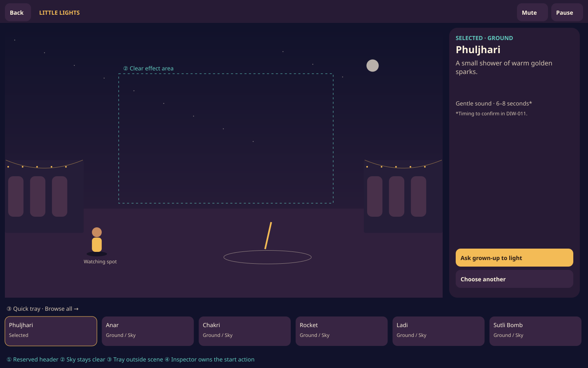
1440 × 900 · Reserved header, 1,072 × 660 scene, 320 px inspector. Teal boundary indicates the clear effect area, not production chrome.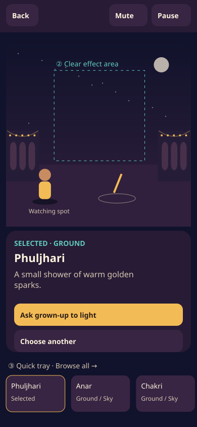
390 × 844 · Scene → selected action strip → horizontal tray. Header retains labeled mute and pause.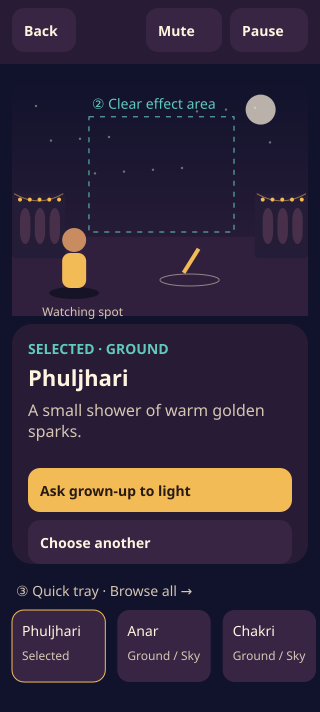
320 × 568 viewport · Content extends to 712 px: scroll the page rather than shrinking text or targets. Sticky utility header in implementation.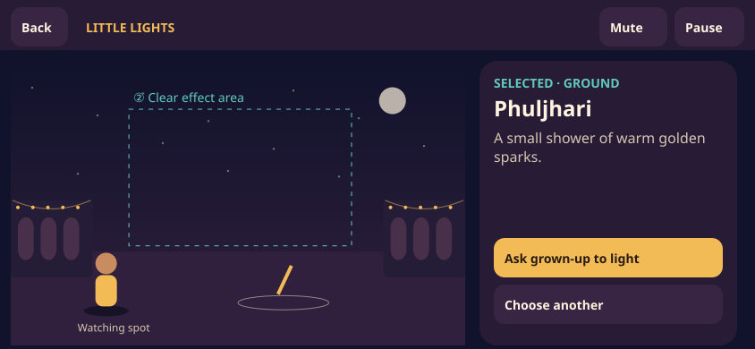
844 × 390 · Wide scene and 288 px side rail. Rail scrolls independently; Browse all replaces the bottom tray.Annotation key: ① persistent utility header; ② unobstructed effect zone; ③ selection outside the sky; ④ a single dominant action in the inspector. All dimensions are CSS pixels; safe-area insets add to reserved bands.
Choose → prepare → watch → keep the memory
Each frame is a deliberate state, not an automatic slideshow. During preparation, countdown and the show, Pause is the dominant available action; the phase advances automatically. Library and pause replace the action surface. Reduced-motion behavior is static in these boards and specified per state.
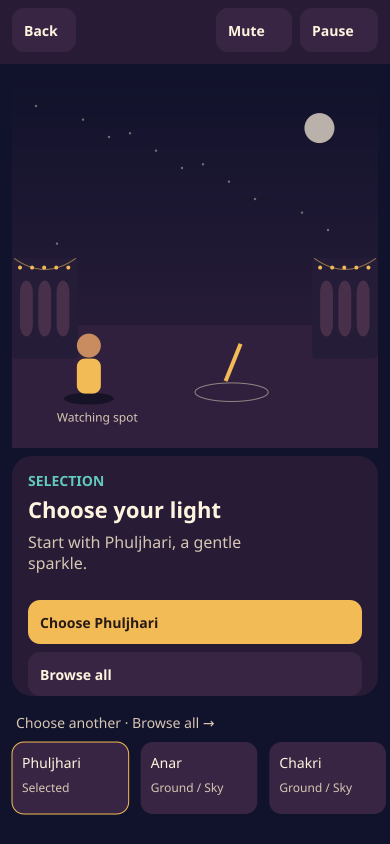
1. selection
No selection yet · no automatic preview
Primary: Choose Phuljhari · Back: Browse all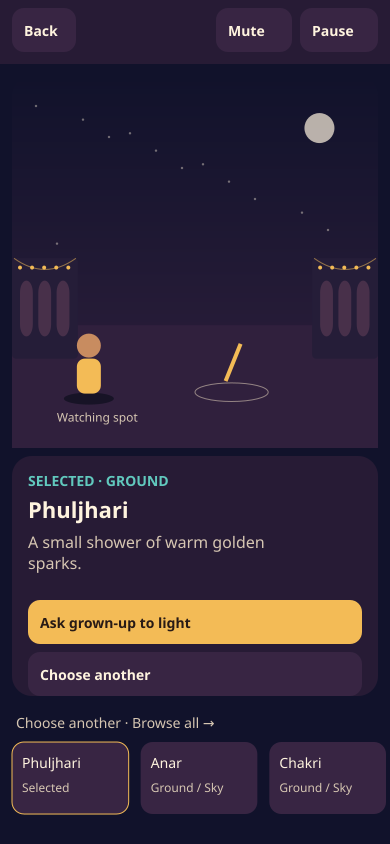
2. details
Selected · Ground · Gentle sound
Primary: Ask grown-up to light · Back: Choose another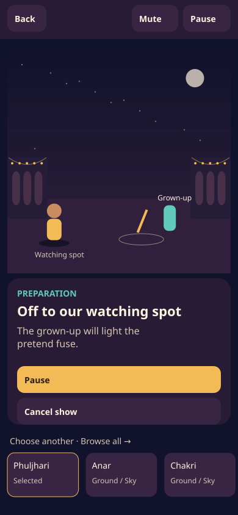
3. preparation
Preparing · the fuse is still unlit
Primary: Pause · Back: Cancel show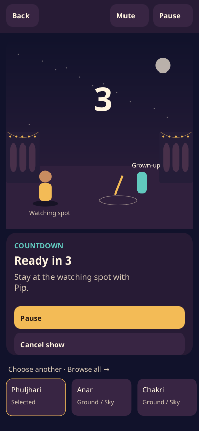
4. countdown
3 → 2 → 1 → Glow · visible text
Primary: Pause · Back: Cancel show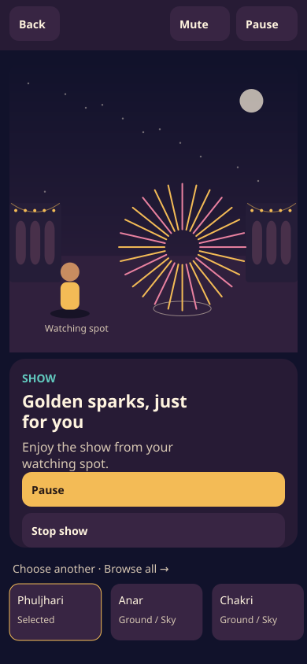
5. show
Playing · Phuljhari
Primary: Pause · Back: Stop show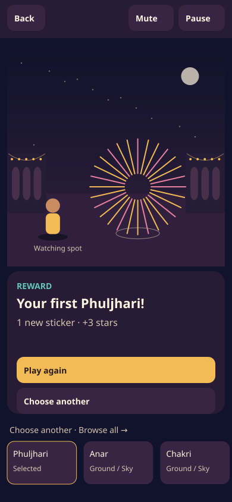
6. reward
Complete · replay earns +1 star
Primary: Play again · Back: Choose another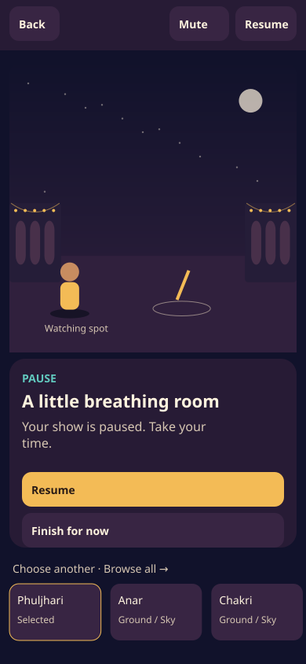
7. pause
Paused · restarting show uses countdown
Primary: Resume · Back: Finish for now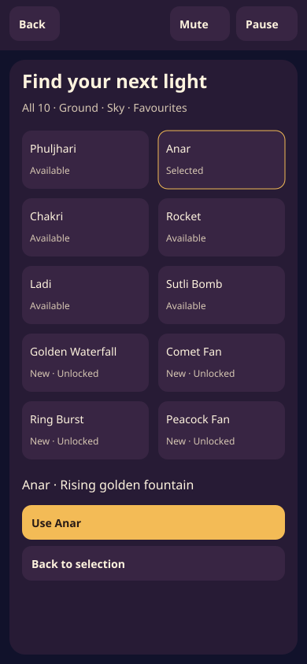
8. library
Browsing · preview is silent and reward-free
Primary: Use Anar · Back: Back to selectionThe library frame specifies category filters, 10 tiles and a persistent selected-item footer. The full interaction, focus and interruption contracts are in the specification. No automatic playback, rewards, audio or storage changes occur in this design artifact.